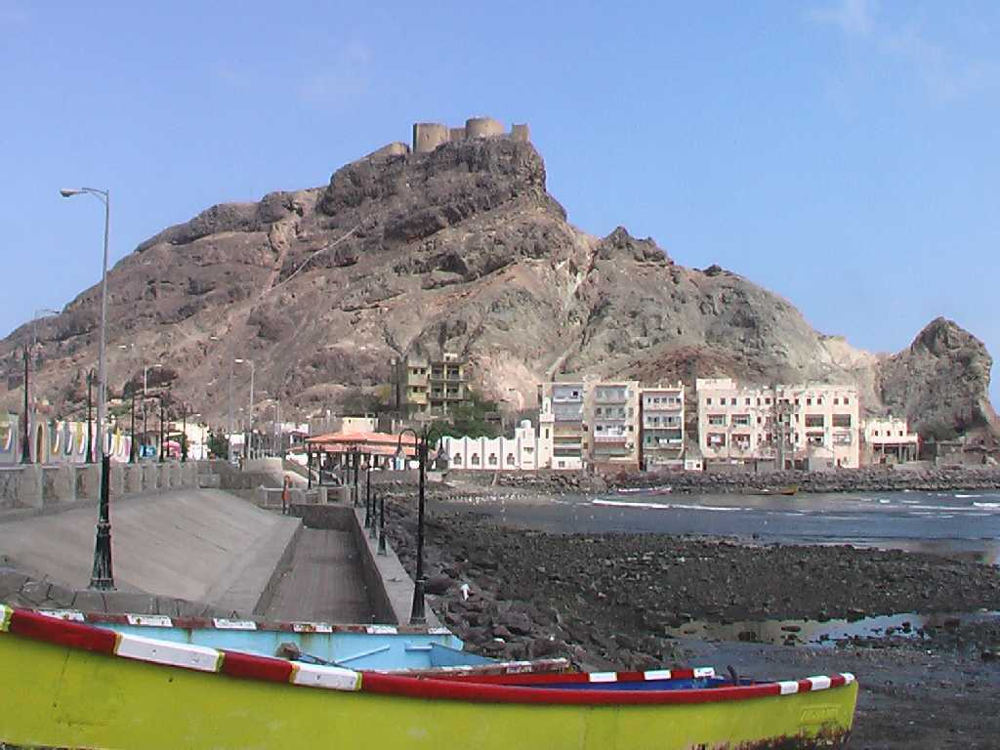
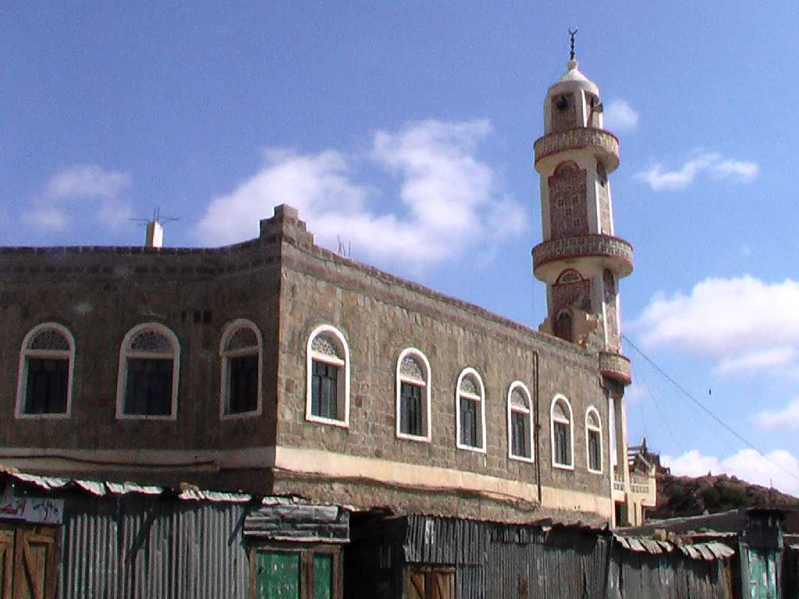
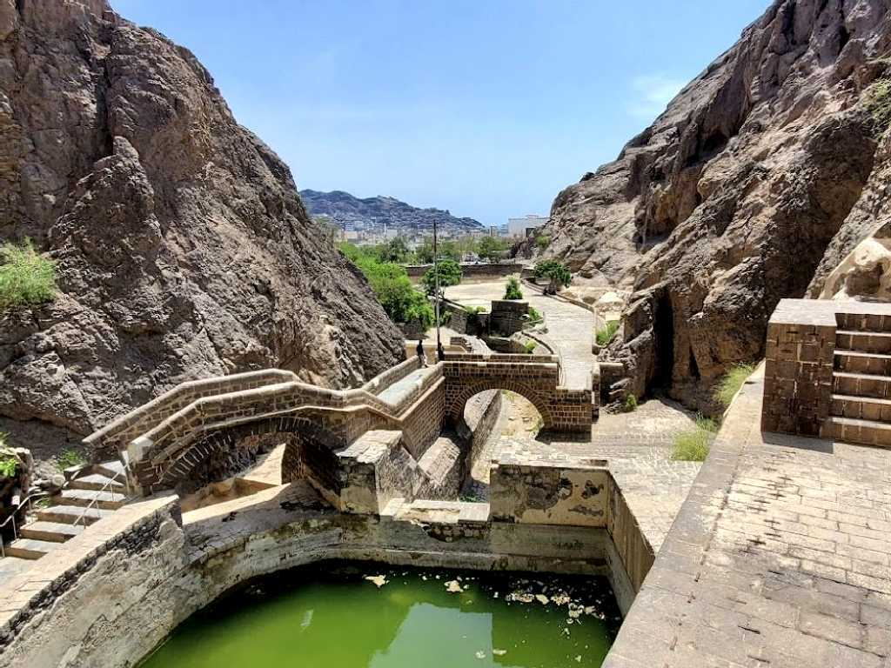
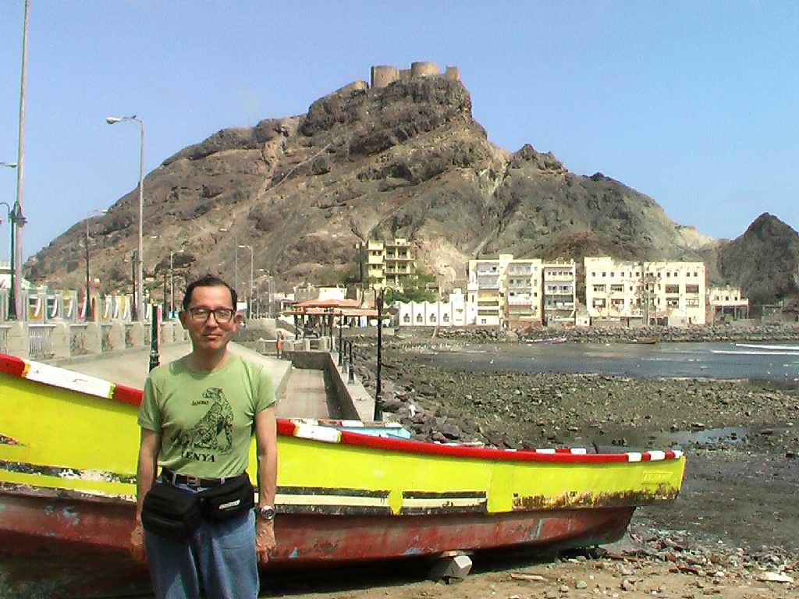

アデン港は古くから海運の要衝として発展し１５世紀にはオスマントルコの支配下になりその後イギリスの一都市植民地として急速な発展を遂げた シバの女王の水瓶と言われていた２０００年前の貯水池通称アデンタンクがイギリスによって整備されたため人口が増加し中東の重要な港となった １９７０年代から９０年代にはソ連海軍の中東唯一の基地として重要視されていた

Al Aidaroos Mosque
１５世紀頃創られたスンニ派に近いスーフィー派のモスク

Alsahareej
アデンの街は水不足に悩まされ紀元前後から雨水を貯留するためのアデンタンクが創られ始め７世紀頃から更に拡張された

January 23 2009 Seera Castle Aden
アデンの旧港を見下ろす島に１１世紀頃創られた要塞